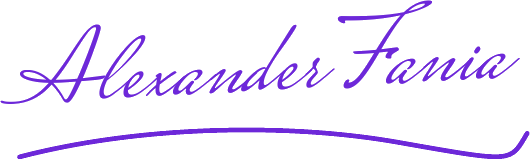
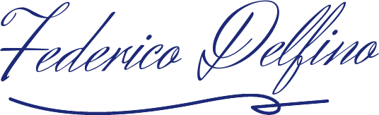
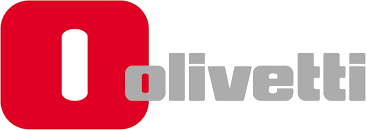
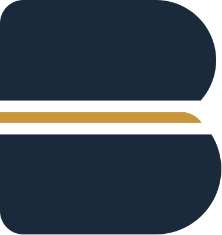
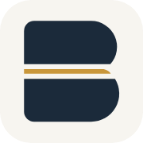
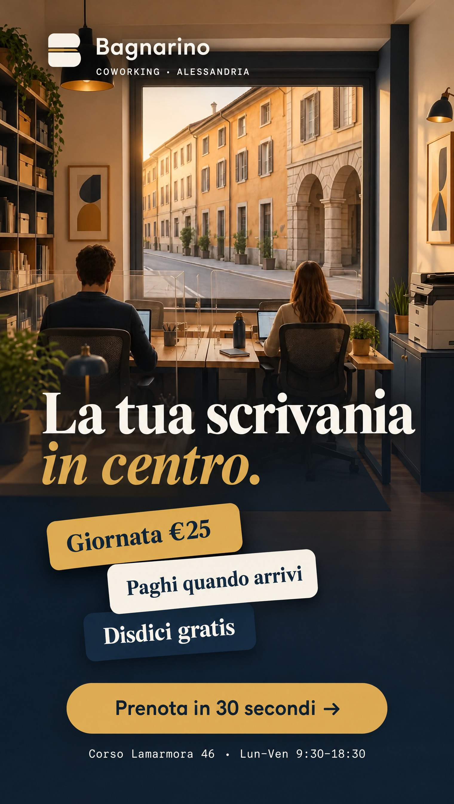
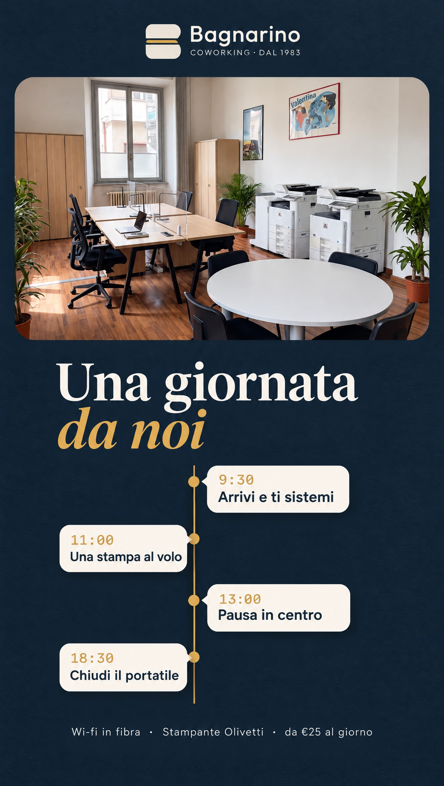
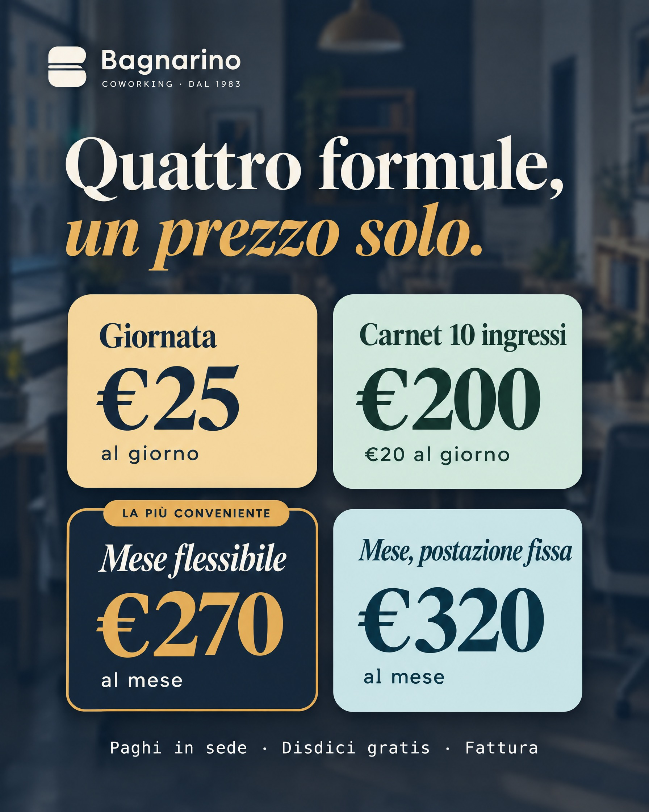
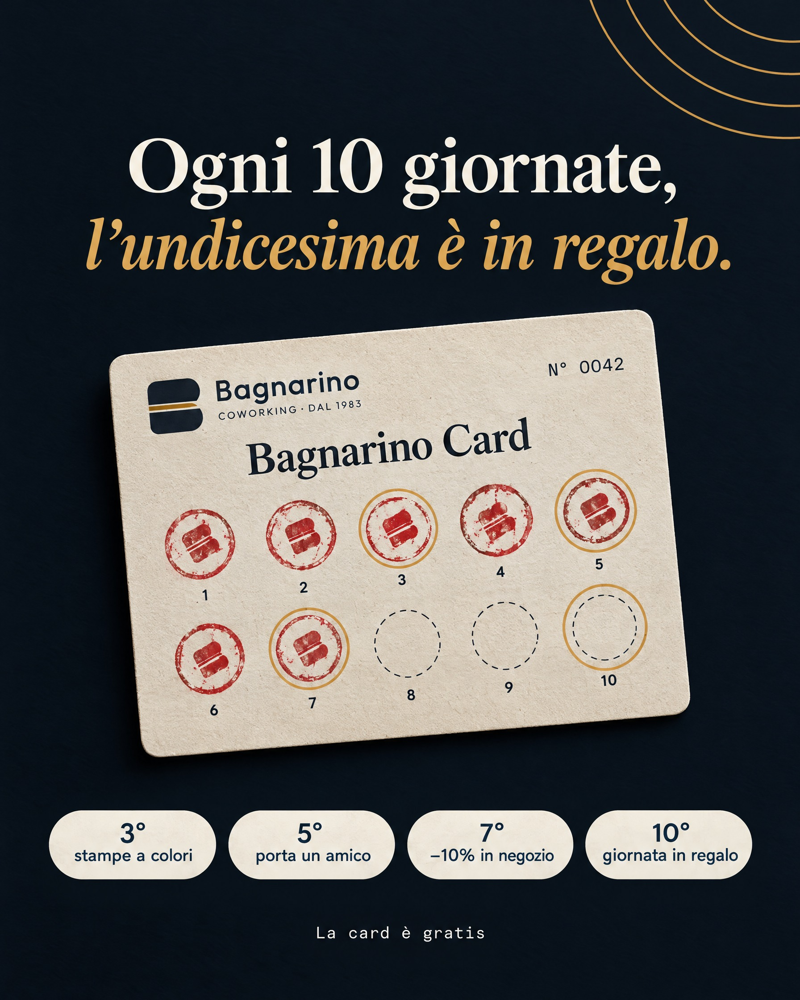
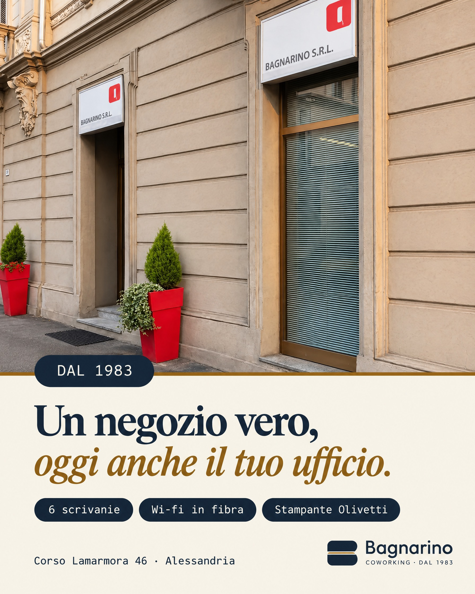

APEX MEDIAPerformance marketing agency
Riservato a Bagnarino S.r.l. · 22 ottobre 2026
Identità visiva · sito e social
Un negozio di sempre,un’identità che si ricorda.
Bagnarino CoworkingAlla gentilissima Marcella Bagnarino
Gentilissima Marcella,
il sito di Bagnarino Coworking è online con un volto nuovo. In queste pagine ti spieghiamo perché è fatto così: il logo, i colori, i caratteri, le pagine del sito e le prime storie e post per Instagram e Facebook.
Non abbiamo inventato un coworking da startup. Siamo partiti da quello che hai già e che nessun altro in città ha: un negozio vero, in corso Lamarmora dal 1983, concessionario Olivetti. Carta, inchiostro, macchine per scrivere, scrivanie di legno. È la tua storia, e oggi è anche il tuo vantaggio.
Ogni scelta ha un solo scopo: che chi ti trova su Google o su Instagram pensi “questo è un posto serio, prenoto”.

Alexander Fania
Federico Delfino
1 logo
la “B” di Bagnarino con la riga ocra: sul sito, su Google, sulla card, sui social.3 colori
blu inchiostro, ocra, carta. Sempre gli stessi, ovunque.3 caratteri
uno per i titoli, uno per leggere, uno da macchina per scrivere.
Cosa troverai in queste pagine
02
Il logo
Cosa racconta la B e la riga ocra03
I colori
Perché il blu, perché l’ocra04
I caratteri
Come “parla” Bagnarino05
Il sito dal telefono
Dove arriva l’80% dei clienti06
Il sito da computer
Prezzi, card, ritmo della pagina07
I social
2 storie e 3 post, spiegati08
Le regole
Cosa facciamo sempre, cosa mai
Il marchio Olivetti sul sito: concessionario ufficiale
Apex Media · per Bagnarino S.r.l.1
APEX MEDIAPerformance marketing agency
0102 Logo030405060708
02 — Il logo
Una B, due scrivanie, una riga d’ocra.
Il logo è il primo segno che il cliente vede: nella scheda di Google, nell’icona del telefono, sulla card in tasca. Per questo deve essere semplice, riconoscibile anche piccolissimo, e raccontare chi sei in un colpo d’occhio.

La B in due pezzi
La riga d’ocra
Tra i due blocchi passa una riga calda, come il divisorio tra due postazioni o la riga su cui scrive la macchina per scrivere. È l’unico accento di colore del logo, e diventa il colore di tutti i pulsanti “Prenota”.
COWORKING · DAL 1983
La firma sotto
Sotto il nome, in piccolo, “dal 1983”. Quarant’anni in centro sono una garanzia che nessun altro coworking di Alessandria può scrivere: per questo il logo la porta sempre con sé.
Dove lo vedranno i tuoi clienti

Google e browser
L’icona accanto al nome del sito nei risultati di ricerca e nelle schede.Telefono
Chi salva il sito nella schermata Home lo apre come un’app.Profili social
La foto profilo di Instagram, Facebook e TikTok: tonda, leggibile.Il timbro della card
La B diventa il timbro sulla Bagnarino Card: uno ogni giornata.
E il logo Olivetti?
Resta il marchio di Olivetti e lo usiamo così com’è, solo come “concessionario ufficiale”: in apertura del sito e nel piè di pagina. Accanto a Bagnarino dice al cliente “qui ci sono macchine professionali vere”, senza confondersi con il nostro logo.
Apex Media · per Bagnarino S.r.l.2
APEX MEDIAPerformance marketing agency
010203 Colori0405060708
03 — I colori
Inchiostro, ottone e carta.
Abbiamo scelto pochi colori e li usiamo sempre, dal sito alle storie. Così, anche scorrendo velocemente Instagram, un post di Bagnarino si riconosce prima ancora di leggerlo.
#1B2A3A
Blu inchiostroÈ l’inchiostro della macchina per scrivere e della penna con cui si firma un contratto. Ricorda gli uffici Olivetti, la serietà di un negozio storico, la calma di chi lavora concentrato. Comunica fiducia: è il colore delle fasce scure del sito e della formula consigliata.
#C9973B
OcraL’ottone delle vecchie macchine, il legno delle scrivanie, la luce del pomeriggio in corso Lamarmora. È caldo e accogliente, e lo usiamo per una sola cosa importante: l’azione. Tutti i pulsanti “Prenota” sono ocra, così l’occhio li trova subito.
#F4EEE3
CartaIl colore del foglio, non il bianco freddo di un ufficio qualunque. Riposa gli occhi, fa sembrare il sito stampato e dà spazio alle foto. Si alterna al blu: scendendo nella pagina il ritmo cambia e la lettura non stanca.
Un colore per ogni formula
Le quattro formule hanno ciascuna il suo colore, uguale sul sito, nella pagina di prenotazione e sui social. Chi ha visto il post del mese flessibile lo ritrova blu quando prenota: niente da cercare, niente da ricordare.
€25
GiornataOcra chiaro: il primo passo, caldo e leggero.
€200
Carnet 10 ingressiVerde: il risparmio, chi torna spesso.
€270
Mese flessibileBlu con bordo ocra: la più conveniente, quella che spingiamo.
€320
Mese, postazione fissaPetrolio: stabile, la tua scrivania di sempre.
Perché niente rosso
Il rosso sui siti fa pensare a errori e urgenza, ed è già il colore del marchio Olivetti: lo lasciamo a loro, così i due marchi non si confondono. Resta solo come inchiostro dei timbri sulla Bagnarino Card, perché è il colore vero di un timbro.
Leggibile per tutti
Ogni coppia testo-sfondo rispetta i contrasti delle norme di accessibilità (WCAG AA): si legge bene anche da telefono, al sole, e da chi ha qualche anno in più.
Apex Media · per Bagnarino S.r.l.3
APEX MEDIAPerformance marketing agency
01020304 Caratteri05060708
04 — I caratteri
Tre voci, una sola personalità.
I caratteri sono il “tono di voce” scritto. Ne usiamo tre, ognuno con un compito preciso, e non li mescoliamo a caso: così il sito sembra fatto da una tipografia, non generato in serie.
Titoli e prezziFRAUNCES
Coworking in centro, da €25 al giorno.
Un carattere con le grazie, come le insegne dei negozi storici e i libri ben stampati. Dà classe e calma. Il corsivo ocra sottolinea la parte che conta, spesso il prezzo o la promessa.
Testi e pulsantiHANKEN GROTESK
Scrivania, wi-fi in fibra e stampante incluse. Prenoti in 30 secondi.
Pulito e leggibilissimo, figlio della grafica moderna che Olivetti ha reso famosa. Si legge bene anche piccolo, dal telefono.
Etichette e orariIBM PLEX MONO
LUN–VEN 9:30–18:30
CORSO LAMARMORA 46
Le lettere tutte larghe uguali della macchina per scrivere. Lo usiamo per orari, indirizzi, codici di prenotazione: i dettagli “da ufficio”.
La regola delle card dei prezzi
Due e due
Giornata e Carnet hanno il titolo dritto; i due abbonamenti mensili lo hanno in corsivo. Così si capisce senza leggere che i due mesi sono la stessa famiglia, e che sono le formule “importanti”.
- Le cifre sono tutte nello stesso carattere: il confronto è immediato.
- Ogni card ha il suo colore, il pulsante è sempre in fondo.
- Il mese flessibile sporge e ha il timbro “la più conveniente”.
Apex Media · per Bagnarino S.r.l.4
APEX MEDIAPerformance marketing agency
0102030405 Telefono060708
05 — Il sito, dal telefono
Pensato per il pollice, non per lo schermo grande.
Più di 8 clienti su 10 arrivano dal telefono, da Google o da Instagram. Per questo ogni pagina è disegnata prima per il telefono, con il pulsante “Prenota” sempre a portata di pollice nella barra in basso.
L’apertura. La foto dietro il titolo crea subito l’atmosfera; prezzo, posti liberi di oggi e pulsante ocra sono visibili senza scorrere. Sotto, la targhetta Olivetti e il bollo “1983” che gira piano.
I posti liberi. Una fascia blu con la pianta delle 6 scrivanie, giorno per giorno. Vedere che i posti sono pochi e reali è la prima spinta a prenotare.
La prenotazione. Calendario scuro con i giorni colorati: verde libero, giallo ultimi posti. Ogni pallino è una scrivania. Il giorno scelto si accende in ocra.
3 passi, 30 secondi
Formula, giorno, dati. Nessun pagamento online: si paga in negozio.
Sempre un’uscita
WhatsApp e telefono in ogni pagina, per chi preferisce scriverti.
Veloce
Niente programmi pesanti: il sito si apre in un attimo anche in 4G.
Apex Media · per Bagnarino S.r.l.5
APEX MEDIAPerformance marketing agency
010203040506 Computer0708
06 — Il sito, da computer
Una pagina che cambia ritmo mentre scendi.
La home alterna fasce blu e fasce color carta, con schede chiare che “galleggiano” e sconfinano nella sezione dopo. Nessuna sezione è uguale a quella prima: l’occhio resta sveglio fino al pulsante finale.
L’apertura da computer. Titolo grande a sinistra, foto a tutta pagina, quattro fatti in basso: dal 1983, concessionario Olivetti, 6 scrivanie, orari. In alto a destra il pulsante “Prenota” in ocra, sempre visibile.
La Bagnarino Card. Una tessera di cartoncino vera, con la grana della carta e i timbri rossi un po’ storti, come quelli fatti a mano. Scorrendo, i timbri “si pressano” uno alla volta.
Per chi è. Fascia blu con quattro schede chiare: freelance, smart worker, studenti, piccoli team. Ognuna porta dritta alla formula giusta; quella del mese ha il suo colore.
“
Animazioni “di mestiere”, mai gratuite
I titoli entrano parola per parola, le card dei prezzi salgono una dopo l’altra, le cifre contano fino al prezzo, i timbri si posano sulla card. Movimenti brevi e calmi che guidano lo sguardo verso “Prenota”. Chi ha chiesto al telefono di ridurre le animazioni vede la pagina ferma e completa.
Apex Media · per Bagnarino S.r.l.6
APEX MEDIAPerformance marketing agency
01020304050607 Social08
07 — I social
Lo stesso Bagnarino, anche su Instagram.
Le prime proposte: 2 storie e 3 post. Stessi colori, stessi caratteri e stessi prezzi del sito, così chi passa da Instagram al sito si sente a casa. Ogni grafica ha un solo messaggio e un’azione chiara.

Storia 1 · “La tua scrivania in centro”. Tre card che “escono” dallo schermo: prezzo, paghi quando arrivi, disdici gratis. In basso il pulsante ocra: chi la vede sa già cosa fare.

Storia 2 · “Una giornata da noi”. La sala vera e la linea del tempo dalle 9:30 alle 18:30. Fa immaginare la giornata prima ancora di prenotarla.
Perché le card che escono
Le storie si guardano per due secondi. Le informazioni a “cartellino”, una per riga, si leggono al volo come un listino in vetrina.
Perché foto calde
Luce del pomeriggio e legno: trasmettono la calma che si cerca per lavorare. Niente ufficio freddo, niente vetro e neon.
Perché sempre il prezzo
“Da €25” è la risposta alla prima domanda di tutti. Metterlo subito toglie un dubbio e porta clic veri.

Post 1 · Il listino. Le quattro formule con i loro colori. È il post da fissare in cima al profilo.

Post 2 · La Bagnarino Card. La tessera con i timbri: un motivo concreto per tornare.

Post 3 · Il negozio. L’ingresso vero di corso Lamarmora: “un negozio vero, oggi anche il tuo ufficio”.
Apex Media · per Bagnarino S.r.l.7
APEX MEDIAPerformance marketing agency
0102030405060708 Regole
08 — Le regole dell’identità
Poche regole, sempre rispettate.
Un’identità funziona se è costante. Queste sono le regole che seguiamo noi per ogni pagina, storia e post, e che ti chiediamo di tenere anche per i materiali in negozio.
Sempre
- Il logo Bagnarino in ogni grafica, piccolo e pulito.
- Blu inchiostro, ocra e carta: nessun altro colore di sfondo.
- Il pulsante o l’azione in ocra: “Prenota”, “Scrivici”.
- Prezzi e orari veri, presi dal listino del sito.
- Foto degli spazi veri appena arriva il servizio fotografico.
- Un messaggio per grafica, scritto corto.
Mai
- Recensioni, numeri o clienti inventati.
- Il logo Olivetti modificato o usato come se fosse nostro.
- Rosso o colori accesi fuori dalla Bagnarino Card.
- Più di due caratteri diversi nella stessa grafica.
- Foto di persone senza la loro liberatoria.
- Testi lunghi sulle storie: si leggono in due secondi.
Il tono di voce
Diretto come un commesso di fiducia, caldo come un negozio di quartiere.
Diamo del “tu”, frasi brevi, parole semplici. Niente inglese da startup: “scrivania”, non “desk”; “giornata”, non “day pass”. Ogni testo risponde a una domanda del cliente: quanto costa, quando posso venire, come prenoto.
Cosa ci serve da te per completare
1
Il servizio fotografico
Un giorno in negozio per le foto vere della sala, delle scrivanie e tue al banco.2
I premi della card
Confermare stampe a colori e sconto 10% in negozio prima di pubblicare il post.3
Il logo Olivetti
Il file ufficiale dal kit del concessionario, per averlo nitido ovunque.4
Google e Facebook
L’accesso alla scheda Google Business e alla pagina, come gestori.
Il sito è già online
bagnarinocoworking.it · prenotazioni aperte · le storie e i post partono appena li approvi.
Grazie per la fiducia, Marcella. Ci vediamo in negozio.
Alexander Fania
Federico Delfino
Apex Media · 351 594 0685 · studio@infoapex.eu8